AdaptLearn
›
Curriculum: Claude Architect Foundations
Claude Certified Architect — Foundations
A 6-week structured prep plan derived from the exam-scope diagram.
6 weeks · ~7 hours/week · 42 hours total · 22 concepts · 5 exam areas
EXAM PREP
Source diagram

All concepts grouped by area. Amber = Claude-specific (M14); other colors = prereqs from earlier modules.
Module legend (chip colors below)
M14 Claude-specific
M3 LLM Internals
M5 Memory & RAG
M7 Tools & MCP
M8 Eval
M9 Production
M10 Safety
Overview
Unit
Title
Hours
Maps to
U0 Onboarding & Diagnostic 2 full diagram U1 API Surface 8 API Surface box U2 Cost & Latency Optimization 8 Cost & Latency box U3 Advanced Capabilities 7 Advanced Capabilities box U4 Agent Building Blocks 7 Agent Building Blocks box U5 Production Discipline 8 Production Discipline box U6 Capstone + Mock Exam 2 integrates all five
Units
Baseline your knowledge so you know what to skip.
Outcomes Baseline concept scores; identify weak areas.
Activities Run scorer init; self-rate all 22 concepts depth 0–5; read Module 14 mind map.
Gate progress.json committed with baseline.
Foundation everyone else builds on. The exam treats wrong content-block usage as disqualifying.
Concepts
Messages API + content blocks + streaming
Tool Use (input_schema, tool_choice, parallel)
7-Block Prompt
Strict Tool Use
Lessons 14.1 · 3.3 · 3.4Lab Build a 3-tool agent (search, calc, format) with parallel tool calls and streaming.
Gate Typecheck passes; manual eval on 5 prompts; rate each concept ≥ depth 3.
Pre-req: Unit 1 — you cache content blocks , not strings.
Concepts
Prompt Caching (cache_control, 4-block hierarchy, TTL)
Batch API
Model Tier Routing
Rate Limit Tiers
Lessons 14.2 · 14.3 (tier half) · 14.5Lab Take the U1 agent → add cache_control breakpoints → benchmark cost & latency on 50 prompts → route 80% of traffic to Haiku, 20% to Sonnet.
Gate ≥ 70% cost reduction documented; rate-limit headroom calc submitted.
The capabilities most people skip — and most cert questions probe.
Concepts
Extended Thinking (budget_tokens, redacted blocks)
Vision + Native PDF
Citations API
Computer Use
Lessons 14.3 (thinking half) · 14.4Lab Build a PDF Q&A agent using native PDF blocks + Citations API; add an Extended-Thinking branch for hard questions.
Gate Citation faithfulness ≥ 80% on a 20-question eval set.
Pre-req: Unit 1 Tool Use. Adds retrieval and external tool servers.
Concepts
Agentic RAG (hybrid retrieval + rerank)
MCP Server (tool registry, transport)
Capability Tokens
Lessons 5.2 · 5.4 · 7.1 · 7.4Lab Wrap your retriever as an MCP server; gate each tool with a capability token.
Gate MCP server passes connection test; token misuse rejected in unit tests.
Pre-req: a working agent from any earlier unit.
Concepts
Regression Eval + LLM Judge
Durable Execution (retry, idempotency, checkpointing)
Prompt-Injection Defenses (CaMeL)
Audit Trail (SR 11-7 / EU AI Act)
Lessons 8.1 · 8.3 · 9.1 · 9.2 · 10.2 · 10.4Lab Add a 30-case regression eval (pnpm test:eval); wrap the agent loop with retry + checkpoint; pass 10 red-team injection prompts; emit audit-log entries.
Gate CI eval gate green; injection eval ≥ 9/10 caught; audit log replay-able.
Prove integration across all 5 areas in one agent.
Capstone Ship one integrated agent that exercises ≥ 1 concept from each of the 5 boxes (e.g., a claims-review agent using cached system prompt + parallel tools + PDF/Citations + MCP retriever + retry + audit log).
Mock exam 40 questions drawn proportionally from the diagram (10 API · 8 Cost · 6 Advanced · 6 Agent Blocks · 10 Production).
Pass bar ≥ 75% on mock; every concept rated ≥ depth 3, confidence ≥ 3.
Pacing knobs
Fast track
3 weeks
Double up Units 1+2 and 4+5; skip Unit 6 capstone, do mock only.
Deep track
10 weeks
Add a second lab per unit; rate every concept to depth 4+.
Just the Claude bits
2 weeks
Units 1, 2, 3 only — skip Units 4 & 5 if you already know agent infra from Modules 5–10.
Tracking progress
Each unit has a scorer rate-up target. Run scorer report --module M14 after every unit to see decay-adjusted scores. If any concept drops below depth 3 before the mock exam, re-do that unit's lab.
Generated from the exam-scope diagram at course/diagrams/shared/claude-architect-exam-scope.svg.
Concepts seeded in scripts/capstones/src/scorer/concepts-seed.ts (M1–M14).